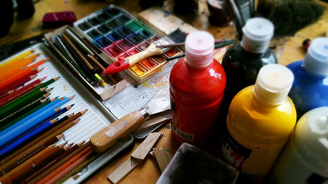

L'association Arts et Zik existe depuis de nombreuses années sur la commune de Plouvorn. Elle propose diverses activités : dessin, cours de batterie, cours de piano et la chorale.

Pour la saison 2022-2023, les inscriptions pourront se faire lors du forum des associations le samedi 3 septembre à l'espace Jacques De Menou. Les cours reprendront la semaine du 19 septembre.
- Cours de dessin
- 
- Des cours collectifs de dessin et de peinture sont assurés par Christophe Coat à l'Atelier. Pour les adultes, les cours se déroulent le lundi soir de 20h à 22h. Pour les enfants, deux créneaux sont proposés : le lundi de 16h45 à 18h00 ou le mercredi de 10h30 à 12h00. Pour les adolescents, les cours ont lieu le samedi matin, un groupe de 9h00 à 10h30 et le second groupe de 10h30 à 12h00.
- Cours de batterie
-

- Guy Plantec proposent des cours individuels de batterie les lundis, mercredis et jeudis à l'Espace culturel du plan d'eau.
- Cours de piano

- Le mercredi, Claire Combot enseigne le piano en cours individuel à l'Espace culturel du plan d'eau.
- La chorale
- Claire Combot dirige également un groupe vocal : Les Zélés du vocal, le mardi de 20h15 à 22h00 à l'Espace culturel du plan d'eau.